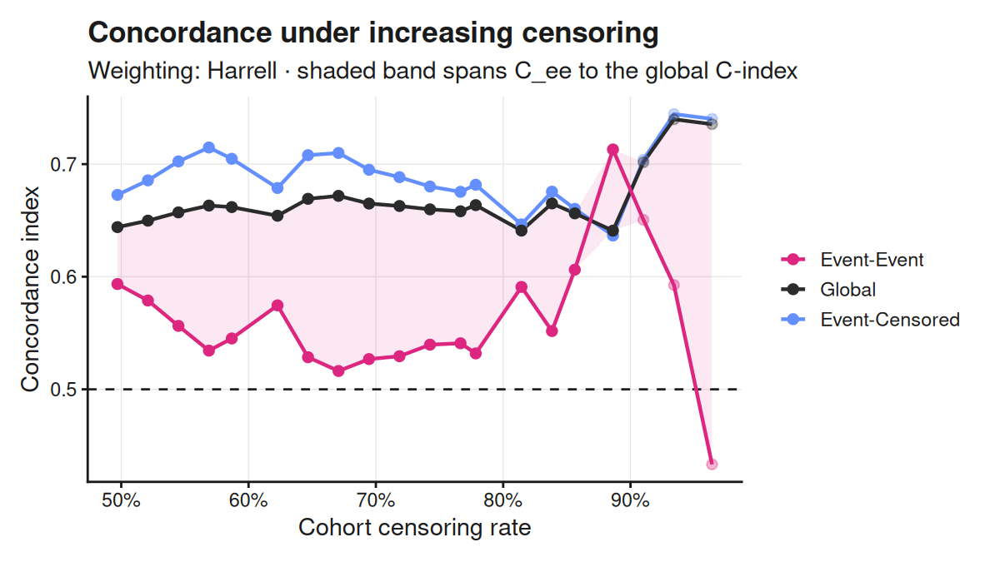
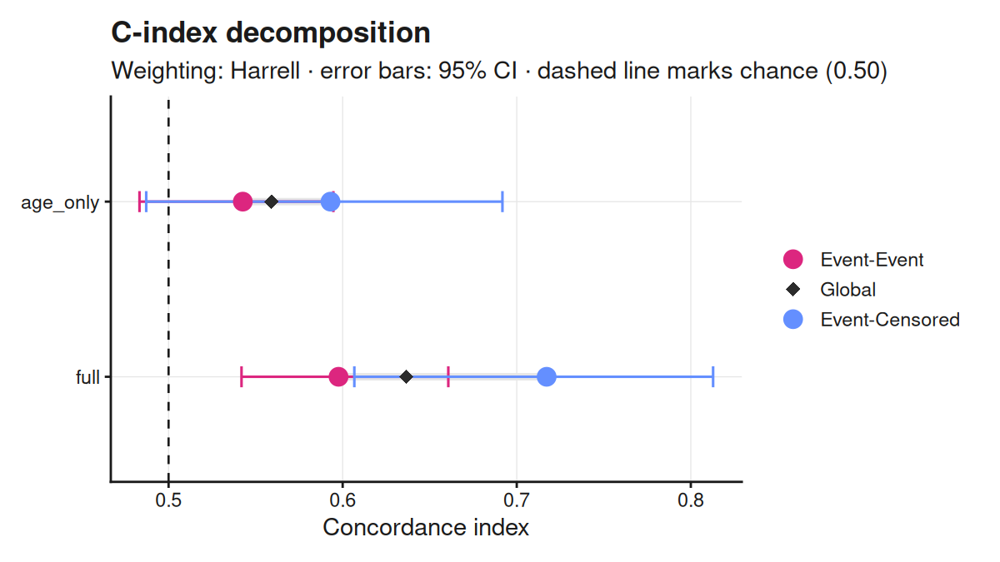

C-Index Decomposition for Survival Models
Overview
Harrell’s concordance index pools two different ranking tasks:
-
Event-Event pairs (
C_ee) — both subjects had the event. The harder task. -
Event-Censored pairs (
C_ec) — one had the event, one was censored later.
As censoring rises the event-event pairs vanish and C_ec dominates the pooled score, so a model close to chance on true events can still report a stable global C-index. cindexdecomp makes that visible.
Installation
# install.packages("pak")
pak::pak("Lainsm/cindexdecomp")Quick start
library(cindexdecomp)
library(survival)
lung2 <- lung[complete.cases(lung), ]
cox <- coxph(Surv(time, status - 1) ~ age + sex + ph.ecog, data = lung2)
fit <- decompose_cindex(
lung2$time,
lung2$status - 1, # lung codes 1/2; the package expects 0/1
predict(cox, type = "lp"),
n_boot = 1000
)
fit
#> C-Index Decomposition
#> Weighting: Harrell | n = 167, events = 120 (71.9%), censoring 28.1%
#>
#> C-index pairs share 95% CI
#> Event-Event 0.5976 7,129 67.5% [0.5343, 0.6584]
#> Event-Censored 0.7172 3,435 32.5% [0.6217, 0.8167]
#> -----------------------------------------------------------------
#> Global 0.6365 10,564 100.0% [0.5773, 0.6954]
#>
#> Masking gap (C_ec - C_ee): +0.120 [+0.014, +0.223]
confint(fit)
#> 2.5 % 97.5 %
#> C_ee 0.53433715 0.6584277
#> C_ec 0.62172323 0.8167116
#> C_global 0.57728104 0.6953807
#> gap 0.01398576 0.2227262A formula interface is available too, and takes the data frame directly:
lung2$lp <- predict(cox, type = "lp")
decompose_cindex(Surv(time, status - 1) ~ lp, data = lung2)
#> C-Index Decomposition
#> Weighting: Harrell | n = 167, events = 120 (71.9%), censoring 28.1%
#>
#> C-index pairs share
#> Event-Event 0.5976 7,129 67.5%
#> Event-Censored 0.7172 3,435 32.5%
#> ----------------------------------------------
#> Global 0.6365 10,564 100.0%
#>
#> Masking gap (C_ec - C_ee): +0.120
#> Pair counts describe composition, not precision. Set n_boot > 0 for intervals.What the numbers say
On this cohort the global C-index looks respectable, but the split shows where it comes from: the event-censored pairs score materially higher than the event-event pairs, and the masking gap quantifies the difference.
c(C_ee = fit$C_ee, C_ec = fit$C_ec, C_global = fit$C_global, gap = fit$gap)
#> C_ee C_ec C_global gap
#> 0.5976294 0.7171761 0.6365013 0.1195467Because confint() bootstraps the gap itself — resampling subjects, not pairs — you can say whether that gap is distinguishable from zero.
The identity
Any concordance index that averages over comparable pairs,
decomposes exactly:
where W denotes sums of weights. Setting w_ij = 1 recovers Harrell’s C. The identity is verifiable from the returned object:
with(fit, (W_ee * C_ee + W_ec * C_ec) / (W_ee + W_ec)) - fit$C_global
#> [1] 0Weightings
| Constructor | Estimator |
|---|---|
weights_harrell() |
Harrell’s C |
weights_uno() |
Uno’s IPCW C |
weights_truncated(tau) |
C truncated at tau
|
weights_custom(fn, name) |
any user-supplied rule |
decompose_cindex(
lung2$time, lung2$status - 1, lung2$lp,
weights = weights_uno()
)
#> C-Index Decomposition
#> Weighting: Uno (IPCW) | n = 167, events = 120 (71.9%), censoring 28.1%
#>
#> C-index pairs share
#> Event-Event 0.5817 7,129 67.5%
#> Event-Censored 0.6938 3,435 32.5%
#> ----------------------------------------------
#> Global 0.6185 10,564 100.0%
#>
#> Masking gap (C_ec - C_ee): +0.112
#> Pair counts describe composition, not precision. Set n_boot > 0 for intervals.The pooled result agrees with survival::concordance() to machine precision for Harrell’s weighting under every tie pattern, and for Uno’s weighting when event times are distinct. Under tied times, Uno’s pairwise estimator diverges from the counting-process form in survival by around 1e-04 — immaterial in practice, and explained in the vignette (vignette("cindexdecomp")).
Tracing the masking
censoring_curve() re-applies the decomposition under a sweep of administrative cut-offs, so you can watch C_global hold steady while C_ee moves:
curve <- censoring_curve(lung2$time, lung2$status - 1, lung2$lp)
autoplot(curve)
The global curve holds near 0.65 across the sweep while the event-event curve falls to chance and below. That divergence is the masking the package is named for. autoplot() is re-exported, so ggplot2 does not need to be attached to get the plot — only to modify it afterwards.
Comparing models
risks <- list(
age_only = predict(coxph(Surv(time, status - 1) ~ age, data = lung2)),
full = lung2$lp
)
cmp <- compare_decompositions(risks, lung2$time, lung2$status - 1, n_boot = 200)
cmp
#> C-Index Decomposition Comparison
#> Weighting: Harrell | 2 model(s) | n_boot = 200
#>
#> model C_ee C_ec C_global gap
#> age_only 0.5426 0.5930 0.5590 0.05037
#> full 0.5976 0.7172 0.6365 0.11955
autoplot(cmp)
Functions
| Function | Description |
|---|---|
decompose_cindex() |
Decomposes into C_ee and C_ec
|
confint() |
Bootstrap intervals, including for the masking gap |
censoring_curve() |
Traces the decomposition as censoring rises |
compare_decompositions() |
Runs several models over one cohort |
autoplot() |
Plots any of the above |
theme_cindex() |
Light (default) and dark plot themes |
Model agnostic
Any model that produces a risk score works:
decompose_cindex(time, status, predict(cox_fit, type = "lp"))
decompose_cindex(time, status, predict(xgb_fit, xgb.DMatrix(X)))
decompose_cindex(time, status, predict(rsf_fit, newdata = test)$predicted)Limitations
- Assumes non-informative censoring.
-
C_eeis imprecise when few event-event pairs exist. Useconfint(); pair counts describe composition, not precision. - Evaluates discrimination only, not calibration.
- Model-based estimators such as Gönen–Heller are out of scope: they integrate over an assumed model rather than counting observed pairs, so the event-event partition is undefined for them.
Citation
citation("cindexdecomp")
To cite cindexdecomp in publications, use:
Lainsbury MJ (2026). cindexdecomp: C-Index Decomposition for Survival
Models. R package version 0.2.0.
https://github.com/Lainsm/cindexdecomp
A BibTeX entry for LaTeX users is
@Manual{,
title = {{cindexdecomp}: C-Index Decomposition for Survival Models},
author = {Malik J. Lainsbury},
year = {2026},
note = {R package version 0.2.0},
url = {https://github.com/Lainsm/cindexdecomp},
}